Capítulo 6 Análisis exploratorio (EDA)
Este capítulo responde la pregunta del libro con los archivos limpios del capítulo 5: partidos (un partido por fila) y parejas (una fila por pareja y partido). Avanza en tres niveles, de lo simple a lo conjunto: cada variable por separado (6.1), cada variable frente al resultado (6.2) y varias variables a la vez (6.3). Cada sección termina con un recuadro «Para el entrenador».
asimetria <- function(x) {
x <- x[!is.na(x)]
m <- mean(x)
mean((x - m)^3) / mean((x - m)^2)^1.5
}
resumir <- function(x, nombre) {
x <- x[!is.na(x)]
tibble(Variable = nombre, n = length(x), Media = mean(x), Mediana = median(x),
DE = sd(x), P25 = quantile(x, .25, names = FALSE),
P75 = quantile(x, .75, names = FALSE), Mín = min(x), Máx = max(x),
Asimetría = asimetria(x))
}
fp <- function(p) ifelse(p < 0.001, "< 0,001", fmt(p, 3))6.1 Análisis univariado
6.1.1 El partido
Antes de describir cada variable, la figura muestra la variable respuesta del libro. En el panel izquierdo, la pareja A es la ganadora cuando el match_id es par y la perdedora cuando es impar (capítulo 3), por lo que el reparto entre «Gana A» y «Gana B» es casi 50/50 por construcción. En el panel derecho, el favorito es la pareja mejor rankeada; los partidos sin ranking numérico en alguna de las dos parejas, o con el mismo ranking, quedan aparte.
resp <- bind_rows(
partidos %>% transmute(panel = "¿Gana la pareja A o la B?",
categoria = ifelse(match_id %% 2 == 0, "Gana A", "Gana B")),
partidos %>% transmute(panel = "¿Gana el favorito?",
categoria = case_when(is.na(rank_diff) | rank_diff == 0 ~ "Sin ranking comparable",
rank_diff > 0 ~ "Gana el favorito",
TRUE ~ "Sorpresa"))
) %>%
count(panel, categoria) %>%
group_by(panel) %>% mutate(p = n / sum(n)) %>% ungroup() %>%
mutate(categoria = factor(categoria, levels = c("Gana A", "Gana B", "Gana el favorito",
"Sorpresa", "Sin ranking comparable")))
ggplot(resp, aes(categoria, n, fill = categoria)) +
geom_col() +
geom_text(aes(label = paste0(fmt(n), " (", pct(p), ")")), vjust = -0.4, size = 3.4) +
scale_fill_manual(values = c("Gana A" = "#0B3B5C", "Gana B" = "#5B8DB0",
"Gana el favorito" = "#0B3B5C", "Sorpresa" = "#E4572E",
"Sin ranking comparable" = "#C9D6E3"), guide = "none") +
scale_y_continuous(labels = function(x) fmt(x), expand = expansion(mult = c(0, .15))) +
facet_wrap(~panel, scales = "free_x") +
labs(x = NULL, y = "Número de partidos")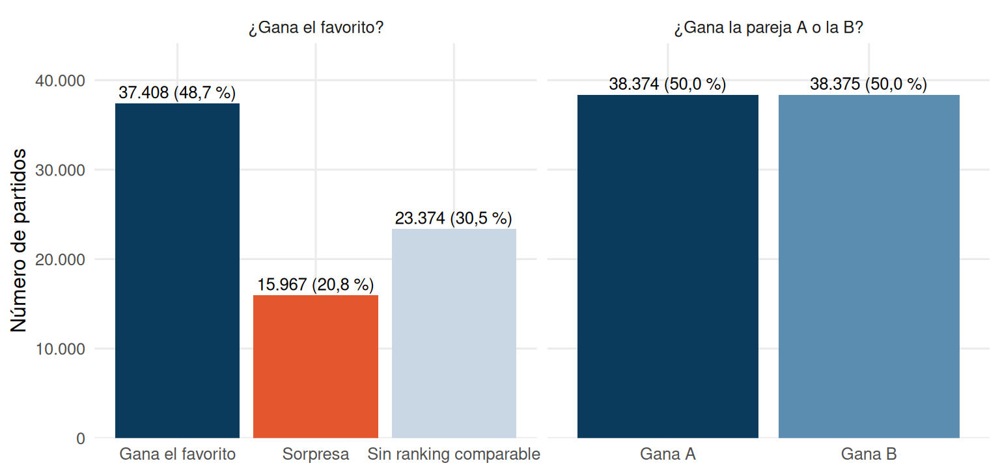
Figura 6.1: Variable respuesta: qué pareja gana (A o B) y si ganó el favorito.
bind_rows(
resumir(partidos$duration_min, "Duración del partido (min)"),
resumir(partidos$n_sets, "Sets por partido"),
resumir(parejas$rank_num, "Ranking de la pareja (1 = mejor)"),
resumir(parejas$edad, "Edad media de la pareja (años)"),
resumir(parejas$estatura, "Estatura media de la pareja (pulgadas)")
) %>% tabla(caption = "Estadísticos descriptivos de las variables numéricas principales.")| Variable | n | Media | Mediana | DE | P25 | P75 | Mín | Máx | Asimetría |
|---|---|---|---|---|---|---|---|---|---|
| Duración del partido (min) | 74.506 | 43,92 | 42,00 | 10,95 | 36,00 | 51,00 | 2,00 | 134,00 | 0,81 |
| Sets por partido | 75.840 | 2,32 | 2,00 | 0,47 | 2,00 | 3,00 | 1,00 | 3,00 | 0,70 |
| Ranking de la pareja (1 = mejor) | 118.306 | 14,95 | 14,00 | 9,75 | 7,00 | 23,00 | 1,00 | 64,00 | 0,48 |
| Edad media de la pareja (años) | 151.014 | 28,56 | 28,45 | 4,30 | 25,59 | 31,46 | 13,49 | 53,82 | 0,16 |
| Estatura media de la pareja (pulgadas) | 136.405 | 73,62 | 73,50 | 3,17 | 71,00 | 76,50 | 63,00 | 82,00 | -0,11 |
med_dur <- median(partidos$duration_min, na.rm = TRUE)
partidos %>%
filter(!is.na(duration_min)) %>%
ggplot(aes(duration_min)) +
geom_histogram(binwidth = 2, fill = col_azul, color = "white") +
geom_vline(xintercept = med_dur, linetype = "dashed") +
labs(x = "Duración (minutos)", y = "Número de partidos")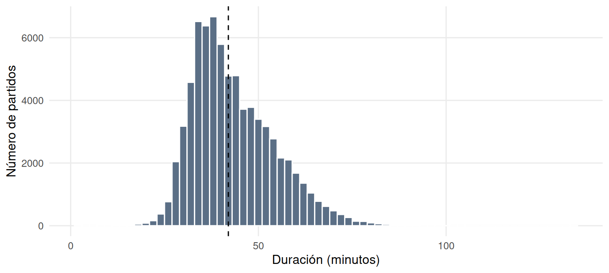
Figura 6.2: Duración de los partidos (minutos). La línea marca la mediana.
partidos %>%
filter(!is.na(n_sets)) %>%
count(n_sets) %>%
mutate(p = n / sum(n)) %>%
ggplot(aes(factor(n_sets), p)) +
geom_col(fill = col_azul) +
geom_text(aes(label = pct(p)), vjust = -0.4) +
scale_y_continuous(labels = function(x) paste0(100 * x, " %"), expand = expansion(mult = c(0, .12))) +
labs(x = "Sets jugados", y = "Porcentaje de partidos")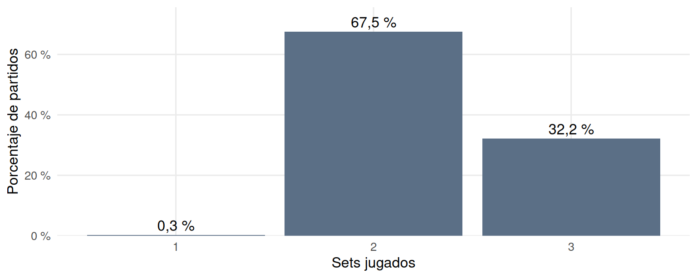
Figura 6.3: Distribución del número de sets jugados.
p_tres <- mean(partidos$n_sets == 3, na.rm = TRUE)
corta_n <- sum(partidos$duracion_corta, na.rm = TRUE)El partido típico dura 42 minutos (mediana) y se resuelve en dos sets; el 32,2 % de los partidos llega a un tercer set. La distribución de la duración tiene cola larga hacia la derecha (asimetría positiva): hay partidos muy largos, pero casi nunca partidos muy cortos.
6.1.2 Los jugadores y las parejas
parejas %>%
filter(!is.na(rank_num)) %>%
ggplot(aes(rank_num)) +
geom_histogram(binwidth = 2, fill = col_azul, color = "white") +
labs(x = "Ranking de la pareja", y = "Número de apariciones")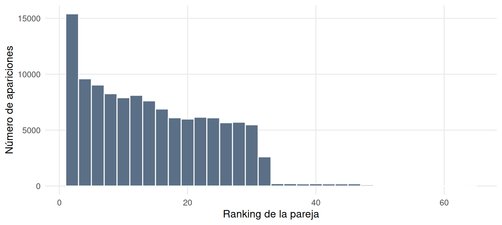
Figura 6.4: Ranking de las parejas en cada partido (1 = mejor).
El ranking numérico va de 1 a 64 y se concentra en los puestos bajos, porque las parejas mejor rankeadas juegan más partidos (llegan más lejos en cada torneo). Está disponible para 77,1 % de las apariciones de pareja.
jugadores %>%
group_by(Género = gender) %>%
summarise(`Jugador-partido` = n(),
`Edad mediana (años)` = median(edad, na.rm = TRUE),
`Estatura mediana (pulgadas)` = median(estatura, na.rm = TRUE),
`Estatura mediana (cm)` = median(estatura, na.rm = TRUE) * 2.54) %>%
tabla(caption = "Edad y estatura de los jugadores por género.", digits = 1)| Género | Jugador-partido | Edad mediana (años) | Estatura mediana (pulgadas) | Estatura mediana (cm) |
|---|---|---|---|---|
| Hombres | 161.064 | 28,9 | 76 | 193,0 |
| Mujeres | 145.932 | 27,5 | 71 | 180,3 |
jugadores %>%
select(gender, `Edad (años)` = edad, `Estatura (pulgadas)` = estatura) %>%
pivot_longer(-gender, names_to = "variable", values_to = "valor") %>%
filter(!is.na(valor)) %>%
ggplot(aes(valor, fill = gender)) +
geom_histogram(bins = 30, position = "identity", alpha = .6, color = "white") +
scale_fill_manual(values = col_gen) +
facet_wrap(~variable, scales = "free") +
labs(x = NULL, y = "Jugador-partido", fill = NULL)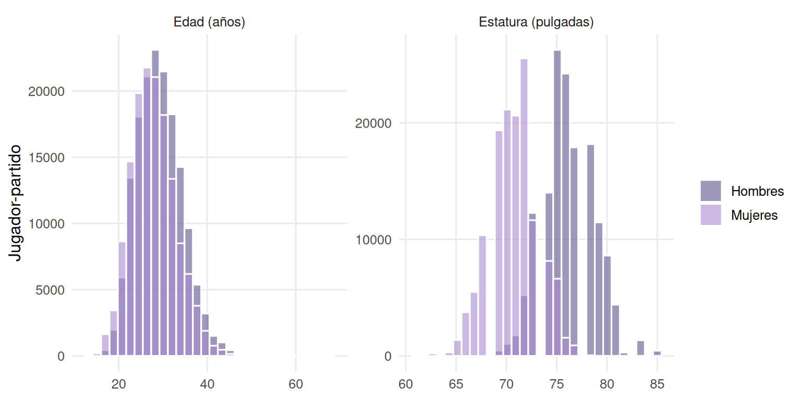
Figura 6.5: Edad y estatura de los jugadores por género.
gen <- jugadores %>%
group_by(gender) %>%
summarise(edad = median(edad, na.rm = TRUE), cm = median(estatura, na.rm = TRUE) * 2.54)
cm_h <- gen$cm[gen$gender == "Hombres"]; cm_m <- gen$cm[gen$gender == "Mujeres"]
ed_h <- gen$edad[gen$gender == "Hombres"]; ed_m <- gen$edad[gen$gender == "Mujeres"]Los hombres son más altos (mediana de 193 cm frente a 180 cm) y algo mayores (28,9 frente a 27,5 años). Como la estatura se distribuye distinto en cada género, cualquier comparación de estatura debe hacerse dentro del mismo género.
Para el entrenador
- Un partido normal son dos sets y unos 42 minutos; planear la preparación física para un tercer set tiene sentido (ocurre en cerca de 1 de cada 3 partidos).
- El ranking se mueve en una escala de 1 a 64: una diferencia de 5 puestos es una brecha moderada, una de 30 es enorme.
- La estatura y la edad de referencia no son las mismas en hombres y mujeres: compare a una pareja con su propio género.
6.2 Análisis bivariado
6.2.1 Parejas ganadoras frente a perdedoras
Se compara cada variable entre las parejas que ganaron y las que perdieron, con la prueba de Mann-Whitney, el tamaño de efecto rango-biserial y el solapamiento (capítulo 3). Para el ranking un número menor es mejor; por eso en esa fila se invierte el signo y un efecto positivo siempre significa «la pareja ganadora tiene el valor más favorable».
ovl <- function(x, y, bins = 30) {
br <- seq(min(c(x, y)), max(c(x, y)), length.out = bins + 1)
a <- hist(x, breaks = br, right = FALSE, include.lowest = TRUE, plot = FALSE)$counts / length(x)
b <- hist(y, breaks = br, right = FALSE, include.lowest = TRUE, plot = FALSE)$counts / length(y)
sum(pmin(a, b))
}
magnitud <- function(r) {
as.character(cut(abs(r), c(-Inf, .1, .3, .5, Inf), right = FALSE,
labels = c("trivial", "pequeño", "mediano", "grande")))
}
comparar <- function(v, nombre, signo = 1) {
w <- parejas[[v]][parejas$gano == 1]; w <- w[!is.na(w)]
l <- parejas[[v]][parejas$gano == 0]; l <- l[!is.na(l)]
test <- wilcox.test(w, l, exact = FALSE)
r <- signo * (2 * unname(test$statistic) / (as.numeric(length(w)) * length(l)) - 1)
tibble(Variable = nombre, `n ganadoras` = length(w), `n perdedoras` = length(l),
`Mediana ganadoras` = median(w), `Mediana perdedoras` = median(l),
`r rango-biserial` = r, `Prob. de superioridad` = (r + 1) / 2,
Solapamiento = ovl(w, l), p = fp(test$p.value), Magnitud = magnitud(r))
}
comp <- bind_rows(
comparar("rank_num", "Ranking (mejor = menor)", signo = -1),
comparar("edad", "Edad media de la pareja"),
comparar("estatura", "Estatura media de la pareja")
)comp %>% tabla(caption = "Parejas ganadoras frente a perdedoras: prueba de Mann-Whitney, tamaño de efecto y solapamiento.", digits = 3)| Variable | n ganadoras | n perdedoras | Mediana ganadoras | Mediana perdedoras | r rango-biserial | Prob. de superioridad | Solapamiento | p | Magnitud |
|---|---|---|---|---|---|---|---|---|---|
| Ranking (mejor = menor) | 64.869 | 53.437 | 12,00 | 16,000 | 0,211 | 0,605 | 0,840 | < 0,001 | pequeño |
| Edad media de la pareja | 76.026 | 74.988 | 28,68 | 28,218 | 0,059 | 0,530 | 0,951 | < 0,001 | trivial |
| Estatura media de la pareja | 70.368 | 66.037 | 74,00 | 73,500 | 0,044 | 0,522 | 0,952 | < 0,001 | trivial |
parejas %>%
select(resultado, `Ranking` = rank_num, `Edad media (años)` = edad,
`Estatura media (pulgadas)` = estatura) %>%
pivot_longer(-resultado, names_to = "variable", values_to = "valor") %>%
filter(!is.na(valor)) %>%
ggplot(aes(valor, fill = resultado, color = resultado)) +
geom_density(alpha = .3) +
scale_fill_manual(values = col_res) + scale_color_manual(values = col_res) +
facet_wrap(~variable, scales = "free") +
labs(x = NULL, y = "Densidad", fill = NULL, color = NULL)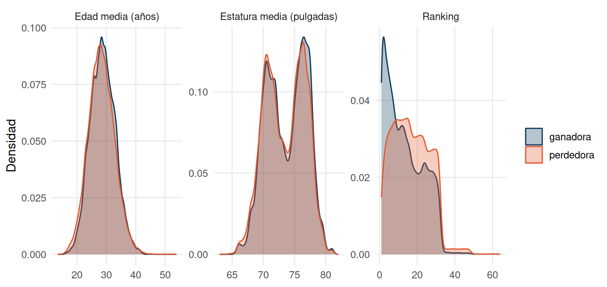
Figura 6.6: Distribución de ranking, edad y estatura en parejas ganadoras y perdedoras.
r_rank <- comp$`r rango-biserial`[1]; ps_rank <- comp$`Prob. de superioridad`[1]; ov_rank <- comp$Solapamiento[1]
r_edad <- comp$`r rango-biserial`[2]; r_est <- comp$`r rango-biserial`[3]
ov_edad <- comp$Solapamiento[2]; ov_est <- comp$Solapamiento[3]Con decenas de miles de partidos las tres diferencias son «estadísticamente significativas», pero su tamaño es muy distinto:
- Ranking: efecto pequeño (r = 0,21). Una pareja ganadora elegida al azar tiene mejor ranking que una perdedora en el 61 % de los casos. Las distribuciones se solapan un 84 %.
- Edad: efecto trivial (r = 0,06) y solapamiento de 95 %. Las ganadoras son apenas unos meses mayores, y buena parte de eso es un reflejo del ranking: las parejas mejor rankeadas tienden a ser más veteranas.
- Estatura: efecto trivial (r = 0,04) y solapamiento de 95 %. Ser más alta en promedio da, como mucho, una ventaja mínima.
Para el entrenador
- De los tres factores, solo el ranking separa de forma útil a ganadoras y perdedoras. Edad y estatura medias casi no ayudan a distinguirlas: las dos distribuciones son prácticamente la misma.
- Que una diferencia sea «significativa» no quiere decir que sirva para decidir: con tantos partidos, hasta diferencias de pocos meses de edad lo son.
6.2.2 Poder discriminante
Para comparar todas las variables del equipo en una sola mirada, cada una se resume con el tamaño del efecto de Mann-Whitney: la correlación rango-biserial (RBC). Cuanto más lejos de cero (en valor absoluto), mejor separa a las parejas ganadoras de las perdedoras. Se clasifica como alto si |RBC| ≥ 0,5, moderado si está entre 0,3 y 0,5 y bajo si es menor a 0,3. Las estadísticas de juego solo se evalúan en la AVP con estadísticas completas.
# Tabla por pareja: una fila por pareja en cada partido (ganadora y perdedora)
H_cm <- 2.54
stt_p <- c("kills", "attacks", "errors", "aces", "serve_errors", "blocks", "digs")
tiene_p <- rowSums(is.na(partidos[grep("_tot_", names(partidos))])) == 0
lado_p <- function(pre, otro, res) {
o <- tibble(circuito = as.character(partidos$circuit), resultado = res,
rank_main = partidos[[paste0(pre, "_rank_num")]],
edad_media = partidos[[paste0(pre, "_age")]],
estatura_media_cm = partidos[[paste0(pre, "_hgt")]] * H_cm,
dif_edad_pareja = abs(partidos[[paste0(pre, "_p1_age")]] - partidos[[paste0(pre, "_p2_age")]]),
dif_estatura_pareja_cm = abs(partidos[[paste0(pre, "_p1_hgt")]] - partidos[[paste0(pre, "_p2_hgt")]]) * H_cm,
rank_rival = partidos[[paste0(otro, "_rank_num")]],
duracion_min = ifelse(partidos$walkover, NA_real_, partidos$duration_min),
genero = as.character(partidos$gender), tiene = tiene_p)
for (k in stt_p) o[[k]] <- partidos[[paste0(pre, "_p1_tot_", k)]] + partidos[[paste0(pre, "_p2_tot_", k)]]
o$hitpct <- ifelse(!is.na(o$attacks) & o$attacks > 0, (o$kills - o$errors) / o$attacks, NA_real_)
o
}
eq_ana <- bind_rows(lado_p("w", "l", "Ganador"), lado_p("l", "w", "Perdedor"))
# Mann-Whitney U (aproximación normal con corrección de continuidad y de empates) y RBC
mw_rbc <- function(g, p) {
g <- g[!is.na(g)]; p <- p[!is.na(p)]
n1 <- as.numeric(length(g)); n2 <- as.numeric(length(p)); N <- n1 + n2
if (n1 < 10 || n2 < 10) return(NULL)
x <- c(g, p); U <- sum(rank(x)[seq_len(n1)]) - n1 * (n1 + 1) / 2
tl <- rle(sort(x))$lengths
sg <- sqrt(n1 * n2 / 12 * ((N + 1) - sum(tl^3 - tl) / (N * (N - 1))))
list(rbc = 2 * U / (n1 * n2) - 1, n = N)
}
vars_poder <- c(rank_main = "Ranking principal", edad_media = "Edad media de la pareja",
estatura_media_cm = "Estatura media de la pareja", dif_edad_pareja = "Dif. de edad entre compañeros",
dif_estatura_pareja_cm = "Dif. de estatura entre compañeros", hitpct = "% de ataque (AVP)",
errors = "Errores de ataque (AVP)", blocks = "Bloqueos (AVP)", kills = "Kills (AVP)",
aces = "Aces (AVP)", digs = "Defensas (AVP)", attacks = "Ataques (AVP)", serve_errors = "Errores de saque (AVP)")
solo_avp_p <- c("hitpct", "errors", "blocks", "kills", "aces", "digs", "attacks", "serve_errors")
poder_tab <- bind_rows(lapply(names(vars_poder), function(v) {
d <- if (v %in% solo_avp_p) eq_ana[eq_ana$circuito == "AVP" & eq_ana$tiene, ] else eq_ana
r <- mw_rbc(d[[v]][d$resultado == "Ganador"], d[[v]][d$resultado == "Perdedor"])
if (is.null(r)) NULL else tibble(variable = vars_poder[[v]], rbc = r$rbc, n = r$n)
}))
poder_tab$abs <- abs(poder_tab$rbc)
poder_tab$poder <- ifelse(poder_tab$abs >= 0.5, "Alto", ifelse(poder_tab$abs >= 0.3, "Moderado", "Bajo"))
poder_tab <- poder_tab[order(poder_tab$abs), ]
poder_tab$variable <- factor(poder_tab$variable, levels = poder_tab$variable)
n_alto <- sum(poder_tab$poder == "Alto"); n_mod <- sum(poder_tab$poder == "Moderado"); n_bajo <- sum(poder_tab$poder == "Bajo")
nom_alto <- paste(as.character(poder_tab$variable[poder_tab$poder == "Alto"]), collapse = " y ")ggplot(poder_tab, aes(x = abs, y = variable, fill = poder)) +
geom_col(width = 0.7) +
geom_text(aes(label = format(round(abs, 2), decimal.mark = ",")), hjust = -0.15, size = 3.5) +
geom_vline(xintercept = c(0.3, 0.5), linetype = "dotted", colour = col_gris) +
scale_fill_manual(values = c(Alto = PIZARRA[5], Moderado = PIZARRA[3], Bajo = PIZARRA[1]), name = "Poder") +
scale_x_continuous(limits = c(0, 1), expand = expansion(mult = c(0, 0.02))) +
labs(x = "|Correlación rango-biserial| (0–1)", y = NULL) +
theme_minimal(base_size = 12) + theme(legend.position = "top", panel.grid.major.y = element_blank())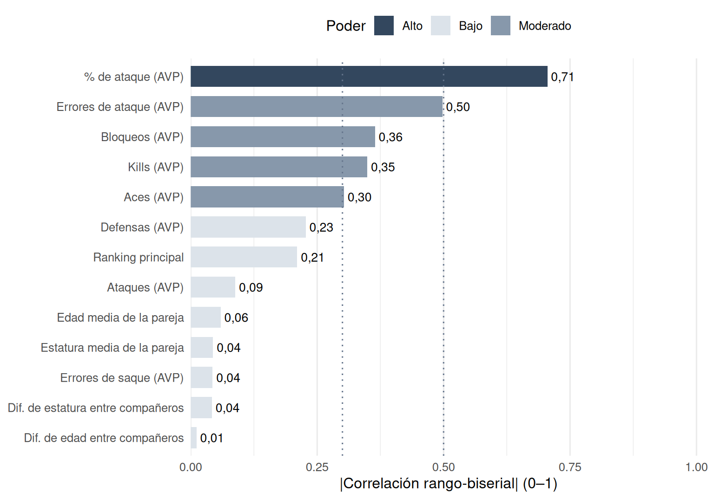
Figura 6.7: Poder discriminante de las variables (|RBC|).
1 variable tiene poder alto, 4 tienen poder moderado y 8 poder bajo. La de poder alto es % de ataque (AVP), y las de poder moderado son también estadísticas de juego de la AVP. Las variables físicas y el ranking absoluto quedan en poder bajo: por sí solas no anticipan quién gana. ### Cuándo el ranking anticipa el resultado
Se llama sorpresa al partido que gana la pareja peor rankeada. Solo se consideran los partidos donde las dos parejas tienen ranking numérico y distinto.
fav <- partidos %>% filter(!is.na(rank_diff), rank_diff != 0) %>%
mutate(sorpresa = rank_diff < 0)
n_fav <- nrow(fav)
tasa_fav <- mean(!fav$sorpresa)De 53.375 partidos con ranking en ambas parejas, el favorito (la pareja mejor rankeada) ganó el 70,1 % y hubo sorpresa en el 29,9 %: casi uno de cada tres partidos no respeta el orden del ranking. Pero ese promedio esconde mucho, porque depende de la brecha entre las parejas:
brecha <- fav %>%
mutate(`Brecha de ranking` = cut(abs(rank_diff), breaks = c(0, 2, 5, 10, 20, 40, 64),
labels = c("1–2", "3–5", "6–10", "11–20", "21–40", "41–64"))) %>%
group_by(`Brecha de ranking`) %>%
summarise(Partidos = n(), `Gana el favorito (%)` = 100 * mean(!sorpresa))
tabla(brecha, caption = "Probabilidad de que gane el favorito según la brecha de ranking.", digits = 1)| Brecha de ranking | Partidos | Gana el favorito (%) |
|---|---|---|
| 1–2 | 7.880 | 55,9 |
| 3–5 | 9.836 | 62,2 |
| 6–10 | 11.165 | 68,6 |
| 11–20 | 18.456 | 75,4 |
| 21–40 | 5.918 | 87,6 |
| 41–64 | 120 | 96,7 |
ggplot(brecha, aes(`Brecha de ranking`, `Gana el favorito (%)`)) +
geom_col(fill = col_azul) +
geom_hline(yintercept = 50, linetype = "dashed") +
geom_text(aes(label = paste0(fmt(`Gana el favorito (%)`, 0), " %")), vjust = -0.4) +
scale_y_continuous(limits = c(0, 105), expand = c(0, 0)) +
labs(x = "Brecha de ranking entre las dos parejas (puestos)", y = "Gana el favorito (%)")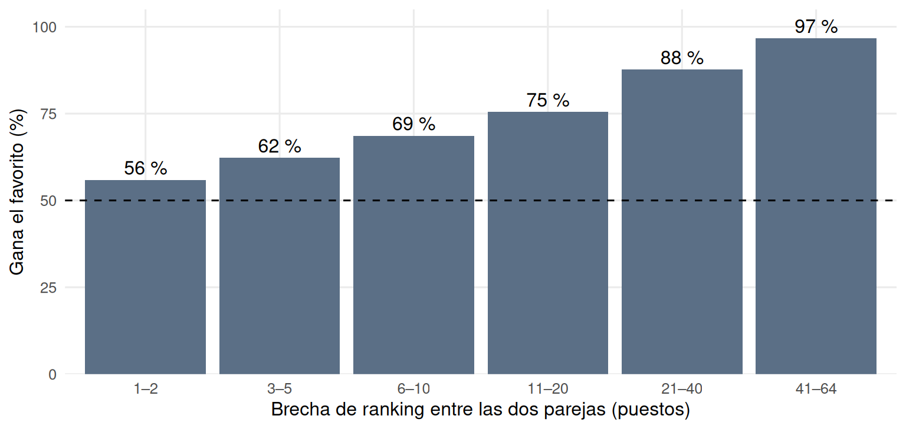
Figura 6.8: Probabilidad de victoria del favorito según la brecha de ranking. La línea punteada es el azar (50 %).
Cuando las parejas están a 1 o 2 puestos, el ranking casi no informa (el favorito gana el 56 %, poco más que una moneda al aire). A medida que la brecha crece, la ventaja sube de forma sostenida hasta el 97 % con brechas de 41 puestos o más.
¿Cambia la tasa de sorpresas según el circuito, el género o la etapa?
tasas <- bind_rows(
fav %>% group_by(Factor = "Circuito", Grupo = as.character(circuit)) %>%
summarise(Partidos = n(), `Sorpresas (%)` = 100 * mean(sorpresa)),
fav %>% group_by(Factor = "Género", Grupo = as.character(gender)) %>%
summarise(Partidos = n(), `Sorpresas (%)` = 100 * mean(sorpresa)),
fav %>% group_by(Factor = "Etapa", Grupo = as.character(etapa)) %>%
summarise(Partidos = n(), `Sorpresas (%)` = 100 * mean(sorpresa))
) %>% ungroup()
chi_v <- function(f, nombre) {
tb <- table(fav[[f]], fav$sorpresa)
tb <- tb[rowSums(tb) > 0, , drop = FALSE]
ct <- suppressWarnings(chisq.test(tb))
tibble(Factor = nombre, `χ²` = unname(ct$statistic), gl = unname(ct$parameter),
p = fp(ct$p.value),
`V de Cramér` = sqrt(unname(ct$statistic) / (sum(tb) * (min(dim(tb)) - 1))))
}
asoc <- bind_rows(chi_v("circuit", "Circuito"), chi_v("gender", "Género"), chi_v("etapa", "Etapa"))
asoc$Magnitud <- magnitud(asoc$`V de Cramér`)
tabla(tasas, caption = "Tasa de sorpresas por circuito, género y etapa del torneo.", digits = 1)| Factor | Grupo | Partidos | Sorpresas (%) |
|---|---|---|---|
| Circuito | AVP | 14.969 | 25,4 |
| Circuito | FIVB | 38.406 | 31,7 |
| Género | Hombres | 26.726 | 31,1 |
| Género | Mujeres | 26.649 | 28,7 |
| Etapa | Clasificatoria | 337 | 54,9 |
| Etapa | Cuadro eliminatorio | 35.982 | 29,9 |
| Etapa | Fase de grupos | 17.056 | 29,5 |
| Factor | χ² | gl | p | V de Cramér | Magnitud |
|---|---|---|---|---|---|
| Circuito | 203,224 | 1 | < 0,001 | 0,062 | trivial |
| Género | 34,458 | 1 | < 0,001 | 0,025 | trivial |
| Etapa | 101,987 | 2 | < 0,001 | 0,044 | trivial |
s_fivb <- tasas$`Sorpresas (%)`[tasas$Grupo == "FIVB"]
s_avp <- tasas$`Sorpresas (%)`[tasas$Grupo == "AVP"]
n_clas <- tasas$Partidos[tasas$Grupo == "Clasificatoria"]
v_circ <- asoc[["V de Cramér"]][1]La tasa de sorpresas es mayor en la FIVB (31,7 %) que en la AVP (25,4 %), pero el efecto es trivial (V = 0,06); entre géneros la diferencia es todavía menor. En la fase clasificatoria el porcentaje parece muy alto, pero hay solo 337 partidos con ranking en ambas parejas (las clasificatorias casi no tienen ranking numérico), así que esa cifra no es confiable.
Lo que sí cambia es el tiempo:
tasa_anio <- fav %>%
group_by(year) %>%
summarise(partidos = n(), tasa = mean(sorpresa)) %>%
filter(partidos >= 200)
ggplot(tasa_anio, aes(year, 100 * tasa)) +
geom_line(color = col_azul, linewidth = 1) +
geom_point(color = col_azul, size = 2) +
scale_x_continuous(breaks = seq(2000, 2019, 2)) +
labs(x = "Año", y = "Sorpresas (%)")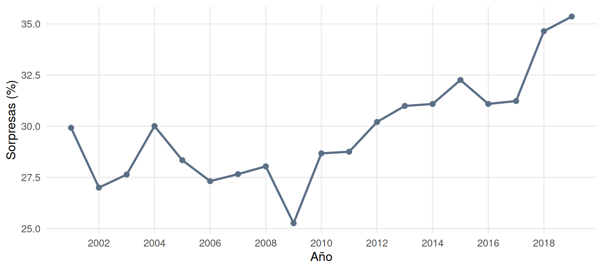
Figura 6.9: Tasa de sorpresas por año (años con al menos 200 partidos con ranking en ambas parejas).
t03 <- 100 * tasa_anio$tasa[tasa_anio$year == 2003]
t19 <- 100 * tasa_anio$tasa[tasa_anio$year == 2019]La tasa de sorpresas pasó de 27,6 % en 2003 a 35,4 % en 2019: en los años recientes el ranking anticipa menos el resultado que a comienzos de los 2000. Es un patrón descriptivo; los datos no permiten explicar por qué.
Para el entrenador
- Con brecha pequeña (menos de 6 puestos), no confíe en el ranking: el favorito gana apenas entre 5 y 6 de cada 10 veces. Ahí pesan otros factores (estilo de juego, rival, estado de forma).
- Con brecha grande (más de 20 puestos), el ranking sí manda: el favorito gana cerca de 9 de cada 10 partidos con brechas de 21 a 40 puestos.
- Prepare más a fondo el partido contra una pareja ligeramente mejor: una sorpresa en ese caso es normal, no una rareza.
- El ranking de hoy anticipa menos que el de hace quince años: no dé por hecho que el favorito ganará.
6.2.3 Estadísticas de juego (solo para una parte de los partidos)
Las estadísticas de juego solo existen para una minoría de partidos y casi todas son de la AVP (capítulo 5). Se comparan las parejas ganadoras y perdedoras en el mismo partido con los totales de la pareja (suma de los dos jugadores), en los partidos que tienen todas las estadísticas completas.
vars_stat <- c(attacks = "Ataques", kills = "Kills (ataques ganadores)",
errors = "Errores de ataque", aces = "Aces",
serve_errors = "Errores de saque", blocks = "Bloqueos", digs = "Defensas (digs)")
cols_necesarias <- unlist(lapply(names(vars_stat), function(k) {
paste0(rep(c("w", "l"), each = 2), "_p", 1:2, "_tot_", k)
}))
gs <- partidos %>% filter(if_all(all_of(cols_necesarias), ~ !is.na(.)))
fila_stat <- function(w, l, nombre) {
U <- unname(wilcox.test(w, l, exact = FALSE)$statistic)
tibble(Estadística = nombre, `Media ganadora` = mean(w), `Media perdedora` = mean(l),
`r rango-biserial` = 2 * U / (as.numeric(length(w)) * length(l)) - 1,
`Gana más la ganadora (%)` = 100 * mean(w > l),
`Gana más la perdedora (%)` = 100 * mean(l > w))
}
tab_stats <- bind_rows(lapply(names(vars_stat), function(k) {
w <- gs[[paste0("w_p1_tot_", k)]] + gs[[paste0("w_p2_tot_", k)]]
l <- gs[[paste0("l_p1_tot_", k)]] + gs[[paste0("l_p2_tot_", k)]]
fila_stat(w, l, vars_stat[[k]])
}))
# Efectividad de ataque de la pareja: (kills - errores) / ataques
hit <- function(p) {
(gs[[paste0(p, "_p1_tot_kills")]] + gs[[paste0(p, "_p2_tot_kills")]] -
gs[[paste0(p, "_p1_tot_errors")]] - gs[[paste0(p, "_p2_tot_errors")]]) /
(gs[[paste0(p, "_p1_tot_attacks")]] + gs[[paste0(p, "_p2_tot_attacks")]])
}
hit_w <- hit("w"); hit_l <- hit("l")
tab_stats <- bind_rows(tab_stats,
fila_stat(hit_w[is.finite(hit_w) & is.finite(hit_l)],
hit_l[is.finite(hit_w) & is.finite(hit_l)],
"Efectividad de ataque ((kills − errores) / ataques)"))tabla(tab_stats, caption = "Estadísticas de juego por pareja: ganadoras frente a perdedoras (partidos con estadísticas completas).", digits = 2)| Estadística | Media ganadora | Media perdedora | r rango-biserial | Gana más la ganadora (%) | Gana más la perdedora (%) |
|---|---|---|---|---|---|
| Ataques | 52,05 | 53,86 | -0,09 | 36,17 | 58,67 |
| Kills (ataques ganadores) | 29,54 | 25,34 | 0,35 | 75,50 | 18,99 |
| Errores de ataque | 5,82 | 8,71 | -0,48 | 17,58 | 72,27 |
| Aces | 2,66 | 1,63 | 0,30 | 57,10 | 24,68 |
| Errores de saque | 3,96 | 4,14 | -0,04 | 40,84 | 45,53 |
| Bloqueos | 3,47 | 2,12 | 0,36 | 62,89 | 21,87 |
| Defensas (digs) | 16,92 | 14,34 | 0,23 | 67,83 | 24,30 |
| Efectividad de ataque ((kills − errores) / ataques) | 0,47 | 0,30 | 0,69 | 89,89 | 9,91 |
n_gs <- nrow(gs)
pct_avp_gs <- mean(gs$circuit == "AVP")
fila <- function(nombre) tab_stats[tab_stats$Estadística == nombre, ]
r_err <- fila("Errores de ataque")$`r rango-biserial`
r_hit <- fila("Efectividad de ataque ((kills − errores) / ataques)")$`r rango-biserial`
r_blq <- fila("Bloqueos")$`r rango-biserial`
r_sq <- fila("Errores de saque")$`r rango-biserial`
r_aces <- fila("Aces")$`r rango-biserial`tibble(resultado = rep(c("ganadora", "perdedora"), each = length(hit_w)),
hit = c(hit_w, hit_l)) %>%
filter(is.finite(hit)) %>%
ggplot(aes(resultado, hit, fill = resultado)) +
geom_boxplot(outlier.alpha = .2) +
scale_fill_manual(values = col_res, guide = "none") +
labs(x = NULL, y = "Efectividad de ataque")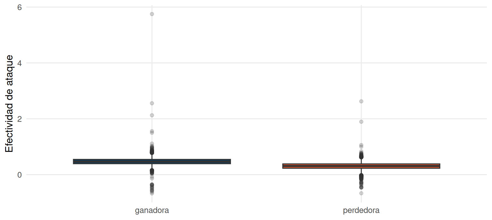
Figura 6.10: Efectividad de ataque de la pareja, ganadoras frente a perdedoras (partidos con estadísticas completas).
Hay 14.332 partidos con estadísticas completas, y el 91 % son de la AVP, así que esta sección describe sobre todo a ese circuito. Lo que más separa a ganadoras de perdedoras no es cuánto ataca la pareja, sino cuánto falla: los errores de ataque (r = -0,48) y la efectividad de ataque (r = 0,69) tienen los efectos más grandes, seguidos por los bloqueos (r = 0,36). Los errores de saque casi no distinguen (r = -0,04).
Para el entrenador (válido sobre todo para el circuito AVP)
- Ganar se parece más a cometer pocos errores que a atacar mucho. Las parejas ganadoras atacan casi lo mismo que las perdedoras, pero cometen bastantes menos errores de ataque.
- Entrene la selección de tiros y la efectividad (kills menos errores sobre ataques) antes que el volumen de ataques.
- El bloqueo y los aces también acompañan a la victoria de forma consistente (r = 0,36 y 0,30); en cambio, los errores de saque casi no distinguen a ganadoras de perdedoras.
- Son asociaciones: una pareja que va ganando también falla menos.
6.3 Análisis multivariado
Hasta aquí cada factor se miró por separado. Pero el ranking, la edad y la estatura pueden solaparse entre sí. Para estudiarlo se arma, para cada partido, una pareja A frente a una pareja B (A es la ganadora si el match_id es par, y la perdedora si es impar; ver el capítulo 3), y se usan las diferencias A − B de cada factor.
dif <- partidos %>%
mutate(A_gana = as.integer(match_id %% 2 == 0),
s = ifelse(A_gana == 1, 1, -1),
dif_ranking = s * (l_rank_num - w_rank_num), # > 0: A mejor rankeada
dif_edad = s * (w_age - l_age),
dif_estatura = s * (w_hgt - l_hgt)) %>%
select(match_id, A_gana, dif_ranking, dif_edad, dif_estatura)
dc <- dif %>% drop_na(dif_ranking, dif_edad, dif_estatura)
n_dc <- nrow(dc)El análisis conjunto usa los 48.371 partidos que tienen ranking, edad y estatura de las dos parejas (63 % del total).
6.3.1 Correlación de Spearman
La correlación de Spearman (\(\rho\)) mide si dos variables se mueven juntas usando rangos, sin suponer que la relación sea una recta. Se calcula entre las variables de cada pareja que se conocen antes del partido y la duración.
vars_sp <- c("rank_main", "rank_rival", "edad_media", "estatura_media_cm", "dif_edad_pareja", "dif_estatura_pareja_cm", "duracion_min")
etq_sp <- c("Ranking propio", "Ranking rival", "Edad media", "Estatura media", "Dif. edad pareja", "Dif. estatura pareja", "Duración")
rho_sp <- suppressWarnings(cor(as.data.frame(eq_ana[vars_sp]), method = "spearman", use = "pairwise.complete.obs"))
dimnames(rho_sp) <- list(etq_sp, etq_sp)
tri <- as.data.frame(as.table(rho_sp)); names(tri) <- c("fila", "col", "rho")
tri$fi <- match(tri$fila, etq_sp); tri$ci <- match(tri$col, etq_sp)
tri <- tri[tri$fi >= tri$ci, ]
tri$fila <- factor(tri$fila, levels = rev(etq_sp)); tri$col <- factor(tri$col, levels = etq_sp)
ggplot(tri, aes(col, fila, fill = rho)) +
geom_tile(colour = "white", linewidth = 1) +
geom_text(aes(label = format(round(rho, 2), decimal.mark = ",")), size = 3.5) +
scale_fill_gradient2(low = "#6E9A74", mid = "#F7F7F7", high = "#33475E", midpoint = 0, limits = c(-1, 1), name = "rho") +
labs(x = NULL, y = NULL) +
theme_minimal(base_size = 12) + theme(axis.text.x = element_text(angle = 30, hjust = 1), panel.grid = element_blank())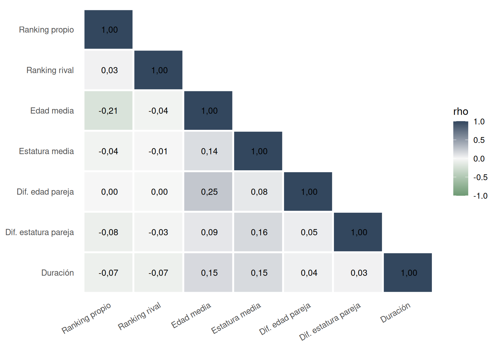
Figura 6.11: Matriz de correlación de Spearman entre variables del equipo.
pares_sp <- tri[tri$fi > tri$ci, ]
pares_sp <- pares_sp[order(-abs(pares_sp$rho)), ]
rho_max_sp <- max(abs(pares_sp$rho))
rho_rival_sp <- rho_sp["Ranking rival", "Ranking propio"]Ninguna correlación es fuerte: la más alta en valor absoluto es entre edad media y dif. edad pareja (rho = 0,25), y el resto no supera 0,21 en valor absoluto. El ranking propio y el del rival casi no se relacionan (rho = 0,03), lo esperable en torneos donde se cruzan equipos de todos los niveles. Las variables que se conocen antes del partido no se repiten entre sí, algo que la sección siguiente confirma con el VIF.
6.3.2 Redundancia entre factores
m <- cor(dc[, c("A_gana", "dif_ranking", "dif_edad", "dif_estatura")])
rownames(m) <- colnames(m) <- c("A gana", "Ventaja de ranking", "Dif. de edad", "Dif. de estatura")
corrplot(m, method = "number", col = colorRampPalette(c("#E4572E", "#F7F7F7", "#0B3B5C"))(200), type = "upper", tl.col = "black", tl.srt = 35,
mar = c(0, 0, 1, 0))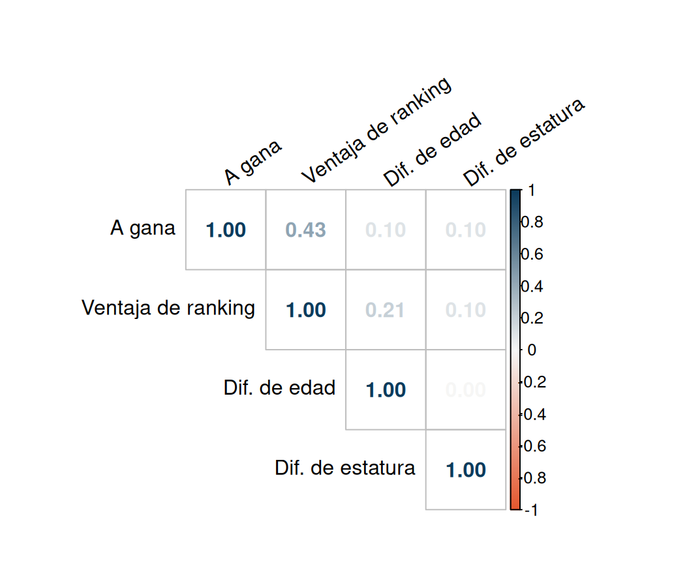
Figura 6.12: Correlación entre el resultado (A gana) y las diferencias de ranking, edad y estatura.
preds <- c("dif_ranking", "dif_edad", "dif_estatura")
vif <- sapply(preds, function(v) {
f <- reformulate(setdiff(preds, v), response = v)
1 / (1 - summary(lm(f, data = dc))$r.squared)
})
tibble(Factor = c("Ventaja de ranking", "Diferencia de edad", "Diferencia de estatura"),
VIF = unname(vif)) %>%
tabla(caption = "Factor de inflación de la varianza (VIF).", digits = 2)| Factor | VIF |
|---|---|
| Ventaja de ranking | 1,06 |
| Diferencia de edad | 1,04 |
| Diferencia de estatura | 1,01 |
m3 <- m[-1, -1] # solo los tres factores, sin la columna «A gana»
max_cor <- max(abs(m3[upper.tri(m3)]))Los tres factores casi no se solapan: la correlación más alta entre ellos es de 0,21 (ranking con edad) y todos los VIF están muy cerca de 1 (la alarma sería 5). Ninguno es redundante: cada uno aporta información distinta. Y de los tres, el ranking es, de lejos, el que más se relaciona con el resultado (columna «A gana»).
Para el entrenador
- Ranking, edad y estatura no se repiten entre sí: cada uno aporta información distinta, y el ranking es el que más se relaciona con el resultado.
- Son asociaciones observadas en el circuito profesional; no prueban que cambiar un factor produzca un cambio en el resultado.
6.3.3 Estilos de juego (K-means, solo AVP)
Los análisis anteriores miran las estadísticas de juego una por una. Aquí se miran las ocho a la vez para encontrar estilos de juego: combinaciones de acciones que aparecen juntas con frecuencia. Se usa K-means sobre las actuaciones (una pareja en un partido) de la AVP con estadísticas completas, siguiendo el procedimiento descrito en la sección de metodología: estadísticas por set, estandarización, elección de \(k\) con la silueta y descripción de cada grupo por su centroide.
acc_km <- c("kills", "aces", "blocks", "digs", "attacks", "errors", "serve_errors")
vkm <- c(paste0(acc_km, "_set"), "hitpct")
etq_km <- c(kills_set = "Kills", aces_set = "Aces", blocks_set = "Bloqueos", digs_set = "Defensas",
attacks_set = "Ataques", errors_set = "Errores de ataque",
serve_errors_set = "Errores de saque", hitpct = "% de ataque")
etq_km_min <- c(kills_set = "kills", aces_set = "aces", blocks_set = "bloqueos", digs_set = "defensas",
attacks_set = "ataques", errors_set = "errores de ataque",
serve_errors_set = "errores de saque", hitpct = "% de ataque")
# Actuaciones: AVP con estadísticas completas, sin forfeits; estadísticas por set
av_km <- partidos %>% filter(circuit == "AVP", !walkover, !is.na(n_sets), n_sets > 0)
lado_km <- function(pre, gano) {
o <- tibble(match_id = av_km$match_id, year = av_km$year, gano = gano)
for (k in acc_km) {
o[[paste0(k, "_set")]] <- (av_km[[paste0(pre, "_p1_tot_", k)]] + av_km[[paste0(pre, "_p2_tot_", k)]]) / av_km$n_sets
}
o
}
km_df <- bind_rows(lado_km("w", 1L), lado_km("l", 0L)) %>%
drop_na() %>% filter(attacks_set > 0) %>%
mutate(hitpct = (kills_set - errors_set) / attacks_set) %>%
filter(is.finite(hitpct))
Z_km <- scale(as.matrix(km_df[, vkm]))# Elección de k: silueta media sobre una muestra de 2.000 actuaciones (para que sea rápido)
set.seed(2026)
idx_km <- sample(nrow(Z_km), min(2000, nrow(Z_km)))
dz_km <- dist(Z_km[idx_km, ])
sil_k <- sapply(2:6, function(k) {
cl <- kmeans(Z_km, k, nstart = 10, iter.max = 50)$cluster
mean(cluster::silhouette(cl[idx_km], dz_km)[, "sil_width"])
})
names(sil_k) <- 2:6
K_EST <- 4
set.seed(2026)
km_fit <- kmeans(Z_km, K_EST, nstart = 20, iter.max = 50)
sil_obj <- cluster::silhouette(km_fit$cluster[idx_km], dz_km)
sil_ind <- sil_obj[, "sil_width"]
sil_grupo <- tapply(sil_ind, sil_obj[, "cluster"], mean)
# Centroides en puntajes z, nombre de cada estilo y orden por % de victorias
cz <- km_fit$centers
colnames(cz) <- vkm
nombre_estilo <- function(z) {
orden <- names(sort(abs(z), decreasing = TRUE))[1:2]
rasgos <- character()
for (v in orden) {
if (abs(z[[v]]) >= 0.25) rasgos <- c(rasgos, paste(ifelse(z[[v]] > 0, "más", "menos"), etq_km_min[[v]]))
}
t <- if (length(rasgos) == 0) "estilo promedio" else paste(rasgos, collapse = " y ")
paste0(toupper(substr(t, 1, 1)), substr(t, 2, nchar(t)))
}
resumen_km <- bind_rows(lapply(1:K_EST, function(g) {
s <- km_df[km_fit$cluster == g, ]
p <- mean(s$gano)
tibble(g = g, Estilo = nombre_estilo(cz[g, ]), n = nrow(s), `% de actuaciones` = 100 * nrow(s) / nrow(km_df),
`% de victorias` = 100 * p, `IC 95 %` = 196 * sqrt(p * (1 - p) / nrow(s)),
`Silueta media` = unname(sil_grupo[as.character(g)]))
})) %>% arrange(desc(`% de victorias`))
resumen_km$E <- paste0("E", 1:K_EST)
km_df$E <- factor(paste0("E", match(km_fit$cluster, resumen_km$g)), levels = paste0("E", 1:K_EST))
# Colores: de azul mar (el estilo que más gana) a coral (el que más pierde)
COL_E <- c(E1 = "#0B3B5C", E2 = "#5B8DB0", E3 = "#EFA58C", E4 = "#E4572E")
clave_km <- lapply(1:K_EST, function(i) {
z <- cz[resumen_km$g[i], ]
top <- sort(abs(z), decreasing = TRUE)[1:2]
names(top)[top >= 0.25]
})
km_n <- nrow(km_df)
km_partidos <- length(unique(km_df$match_id))
km_anios <- range(km_df$year)
km_sil <- mean(sil_ind)
km_neg <- mean(sil_ind < 0)
hit_med <- tapply(km_df$hitpct, km_df$E, median)Paso 1: los datos y la estandarización. Se usaron 26.106 actuaciones de 13.057 partidos de la AVP (2004–2019). Las ocho acciones están en escalas muy distintas: una pareja hace en promedio 23 ataques por set, pero solo 0,9 aces. Sin estandarizar, los ataques dominarían las distancias; después de convertirlas a puntajes z, todas quedan centradas en 0 y con la misma dispersión.
bind_rows(
km_df[, vkm] %>% pivot_longer(everything(), names_to = "v", values_to = "valor") %>% mutate(momento = "Antes: cada acción en su unidad"),
as_tibble(Z_km) %>% pivot_longer(everything(), names_to = "v", values_to = "valor") %>% mutate(momento = "Después: puntajes z")
) %>%
mutate(v = factor(etq_km[v], levels = rev(etq_km[vkm])),
momento = factor(momento, levels = c("Antes: cada acción en su unidad", "Después: puntajes z"))) %>%
ggplot(aes(valor, v)) +
geom_boxplot(fill = col_azul, alpha = .6, outlier.shape = NA) +
facet_wrap(~momento, scales = "free_x") +
labs(x = NULL, y = NULL)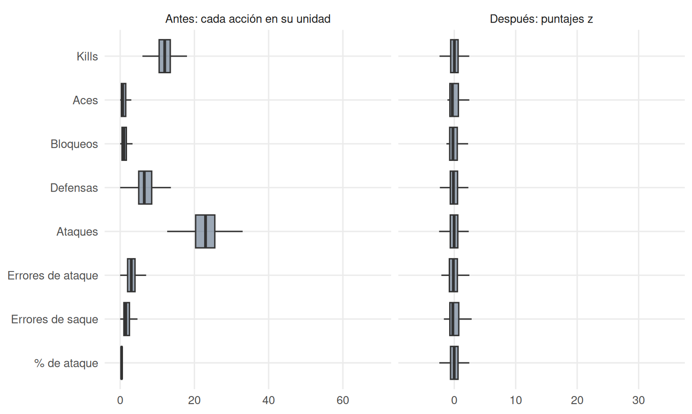
Figura 6.13: Las ocho acciones antes y después de estandarizar (puntajes z).
Paso 2: cuántos estilos. La silueta media de cada \(k\) está en la Figura siguiente: 0,165 con dos grupos, 0,161 con cuatro y 0,141 con seis. Se eligió \(k = 4\) porque cuatro estilos bastan para describir el juego sin abrumar. Todas las siluetas son bajas (la mayor es 0,167): los estilos se solapan y deben leerse como tendencias, no como tipos de pareja bien separados.
tibble(k = 2:6, sil = as.numeric(sil_k)) %>%
ggplot(aes(k, sil)) +
geom_line(color = col_azul, linewidth = 1) +
geom_point(aes(size = k == K_EST, color = k == K_EST)) +
geom_text(aes(label = fmt(sil, 3)), vjust = -1.2, size = 3.4) +
scale_color_manual(values = c("TRUE" = "#111827", "FALSE" = col_azul), guide = "none") +
scale_size_manual(values = c("TRUE" = 4, "FALSE" = 2.5), guide = "none") +
scale_y_continuous(limits = c(0, NA), expand = expansion(mult = c(0, .15))) +
labs(x = "Número de grupos (k)", y = "Silueta media")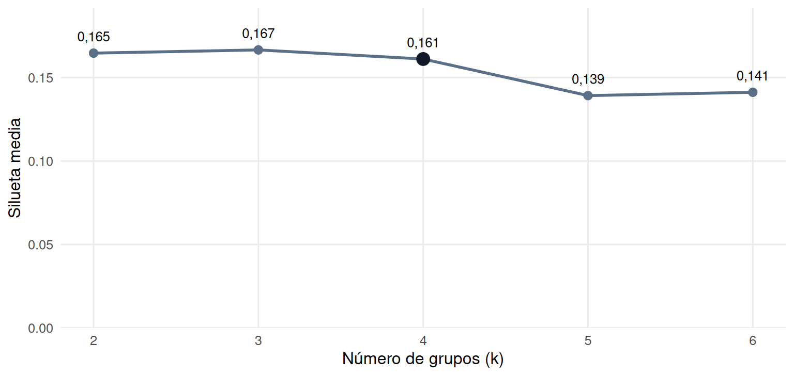
Figura 6.14: Silueta media según el número de grupos k (k = 4 en negro).
Paso 3: la huella de cada estilo. El centroide de cada grupo dice cuánto se aleja, en desviaciones estándar, de la actuación promedio en cada acción. Las barras en color son los dos rasgos que dan nombre al estilo. Los estilos se numeran de mayor a menor % de victorias:
- E1. Más aces y más errores de saque (19 % de las actuaciones).
- E2. Más bloqueos y más % de ataque (26 % de las actuaciones).
- E3. Más ataques y más defensas (26 % de las actuaciones).
- E4. Menos % de ataque y menos kills (29 % de las actuaciones).
hu <- bind_rows(lapply(1:K_EST, function(i) {
tibble(E = paste0("E", i), v = vkm, z = as.numeric(cz[resumen_km$g[i], vkm]), clave = vkm %in% clave_km[[i]])
})) %>%
mutate(v = factor(etq_km[v], levels = rev(etq_km[vkm])),
color = ifelse(clave, E, "otro"))
ggplot(hu, aes(z, v, fill = color)) +
geom_col() +
geom_vline(xintercept = 0, color = "#64748B") +
geom_text(aes(label = paste0(ifelse(z > 0, "+", ""), fmt(z, 1)), hjust = ifelse(z > 0, -0.15, 1.15)), size = 3) +
scale_fill_manual(values = c(COL_E, otro = "#B4C1CF"), guide = "none") +
scale_x_continuous(limits = c(-1.9, 1.9), breaks = c(-1, 0, 1)) +
facet_wrap(~E, nrow = 1) +
labs(x = "Desviaciones estándar frente al promedio", y = NULL)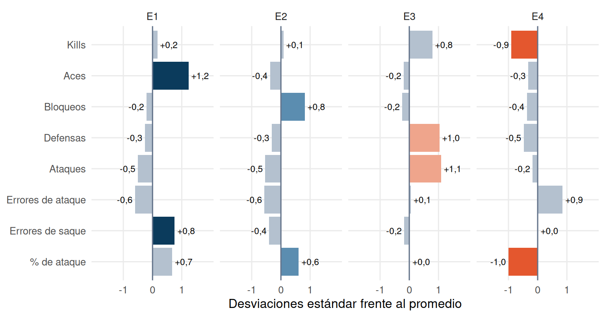
Figura 6.15: Centroide de cada estilo: diferencia frente a la actuación promedio en cada acción (desviaciones estándar).
Paso 4: dónde cae cada actuación. Con dos de las acciones en los ejes se ve cómo K-means repartió las actuaciones. En las zonas donde los colores se tocan, una actuación podría pertenecer a dos estilos: la silueta media es 0,16 y el 3 % de las actuaciones queda más cerca de otro grupo que del suyo.
set.seed(2026)
mu_km <- km_df[sample(nrow(km_df), min(3000, nrow(km_df))), ]
cen_km <- km_df %>% group_by(E) %>% summarise(hitpct = mean(hitpct), kills_set = mean(kills_set), .groups = "drop")
ggplot(mu_km, aes(hitpct, kills_set, color = E)) +
geom_point(alpha = .5, size = 1.2) +
geom_point(data = cen_km, shape = 4, size = 5, stroke = 1.8, color = "white") +
geom_point(data = cen_km, shape = 4, size = 4, stroke = 1.2) +
geom_text(data = cen_km, aes(label = E), color = "#111827", nudge_y = 0.4, fontface = "bold") +
scale_color_manual(values = COL_E) +
labs(x = "% de ataque", y = "Kills por set", color = "Estilo")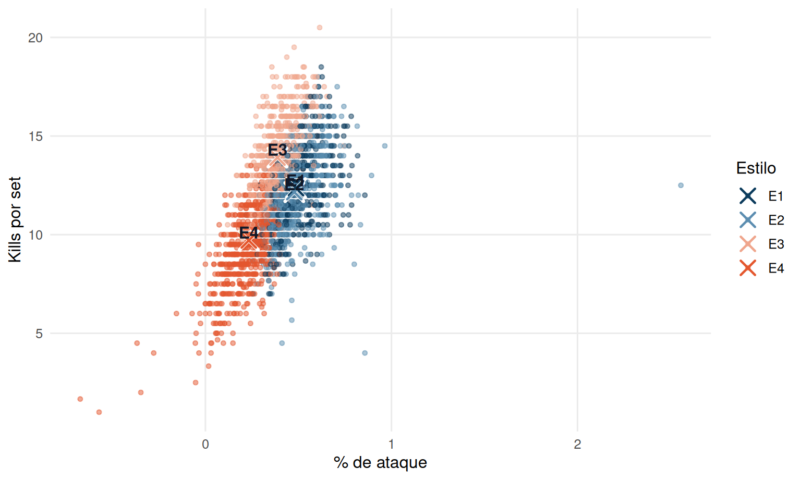
Figura 6.16: Actuaciones según % de ataque y kills por set, coloreadas por estilo (muestra de 3.000; X = centroide).
Paso 5: comprobar que los estilos son distintos. La figura siguiente muestra la distribución de cada acción dentro de cada estilo. Donde las cajas de un estilo no se tocan con las de otro, esa acción los diferencia; por ejemplo, la mediana del % de ataque pasa de 48 % en E1 a 25 % en E4.
km_df %>%
pivot_longer(all_of(vkm), names_to = "v", values_to = "valor") %>%
mutate(v = factor(etq_km[v], levels = etq_km[vkm])) %>%
ggplot(aes(E, valor, fill = E)) +
geom_boxplot(outlier.shape = NA) +
scale_fill_manual(values = COL_E, guide = "none") +
facet_wrap(~v, scales = "free_y", nrow = 2) +
labs(x = NULL, y = NULL)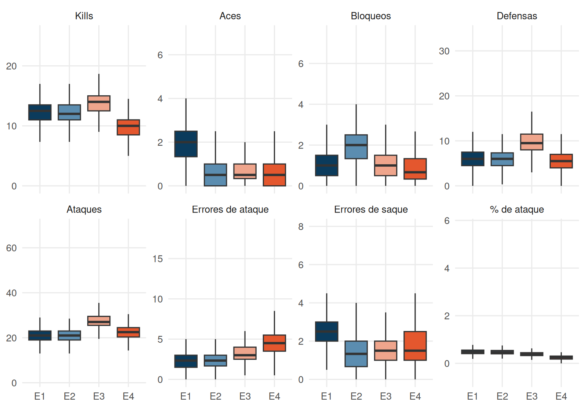
Figura 6.17: Distribución de las ocho acciones en cada estilo (caja: 50 % central; línea: mediana).
Paso 6: cuánto gana cada estilo. Los estilos se diferencian en el resultado: E1 gana el 74,7 % de sus partidos, E2 el 72,2 %, E3 el 55,3 % y E4 el 9,0 %.
resumen_km %>%
mutate(`% de victorias (IC 95 %)` = paste0(fmt(`% de victorias`, 1), " ± ", fmt(`IC 95 %`, 1))) %>%
select(E, Estilo, n, `% de actuaciones`, `% de victorias (IC 95 %)`, `Silueta media`) %>%
tabla(caption = "Estilos de juego de la AVP: tamaño, % de victorias y silueta media (K-means con k = 4 sobre ocho acciones por set estandarizadas; una fila = una pareja en un partido).", digits = 3)| E | Estilo | n | % de actuaciones | % de victorias (IC 95 %) | Silueta media |
|---|---|---|---|---|---|
| E1 | Más aces y más errores de saque | 5.055 | 19,363 | 74,7 ± 1,2 | 0,134 |
| E2 | Más bloqueos y más % de ataque | 6.685 | 25,607 | 72,2 ± 1,1 | 0,157 |
| E3 | Más ataques y más defensas | 6.815 | 26,105 | 55,3 ± 1,2 | 0,162 |
| E4 | Menos % de ataque y menos kills | 7.551 | 28,924 | 9,0 ± 0,6 | 0,183 |
La diferencia de victorias confirma lo que mostró el análisis bivariado: lo que más separa al estilo que gana del que pierde es la eficacia en ataque. El estilo E4 no pierde “por ser” el E4: cuando el ataque no funciona, el partido se pierde y la actuación queda en ese grupo. Por eso los estilos sirven para describir cómo jugó una pareja, no para anticipar quién gana.
Para el entrenador
- Los cuatro estilos son un lenguaje común para describir un partido (“hoy jugamos tipo E3”). Dos parejas pueden ganar de formas distintas, pero las dos convierten bien sus ataques.
- Si su pareja cae seguido en el estilo E4, la prioridad es la eficacia en ataque, no el volumen.
- Son asociaciones: las estadísticas se producen en el mismo partido que se gana o se pierde.